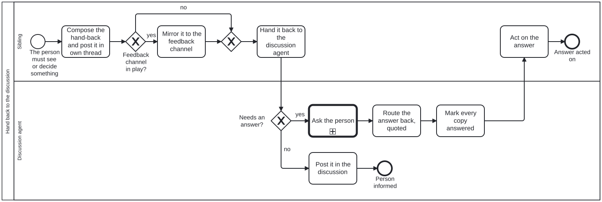

Generated from
cat-harness/skills/conduct/conduct-core/hand-back-to-discussion.md— do not edit here. Typed contract: schema reference.
Hand back to the discussion
The procedure behind
Process_HandBackToDiscussion.
It joins two rules that already bind: ask-the-person
(how a question is put) and the relay paragraph of
interaction-modality §4.1 (a relayed question says
where the answer goes). This skill is the missing step between them: who
puts the question, and how the answer gets back.
Why
Owner, 2026-10-31: “sublings not raising cards to main. update process/skills when agent spawn is run in interactive agent-human discussion that that sibling of discussion agent will make sure to pass card/structured Q&A/context/.. back to the dsicussion agent with the human. if other fedbcak mechanism in play like tools such as google sheets that can enage as well then should also be avialbe to use” (cat-harness#861).
That day several sibling threads posted decision cards only in their own
thread. The person was in the project chat, talking with the coordinator, and
saw none of them until the coordinator found each one and relayed it by hand.
A card nobody sees is a decision that stalls, and one relayed by
reconstruction is the 2026-09-22 failure in interaction-modality again.
The two roles
| role | who | does |
|---|---|---|
Discussion agent (session-coordinator) | the agent the person is talking with right now: a project coordinator, the parent of a subagent, the session that spawned a swarm | shows the hand-back to the person, asks with ask-the-person, marks every copy answered, routes the answer back |
Sibling (sibling-session) | any agent the discussion agent spawned, or one working beside it on the same goal: a project thread, a subagent, a workflow agent, a cloud session | composes the hand-back once, with the analysis it alone has, and acts on the answer |
You are a sibling when your brief names a discussion agent, or when you were started by another agent while a person was talking with it. A sibling that is not sure hands back anyway: one extra copy costs a line, and a missed card costs a stalled decision.
The brief names the discussion (spawning agent)
An agent that spawns a sibling during a live discussion puts the discussion
link in the brief (definitions.discussion of the input schema): who the
discussion agent is, how to reach it, the standing card rules, and any
feedback channel in play (a review sheet’s id and tab, an issue). See
process-state §”A coordinator that
briefs a thread”. A sibling has nothing else that tells it.
Input and output
The contract is input.schema.json
and output.schema.json.
- In (the hand-back):
from(title, link, process),to(the discussion link),kind(decision,question,context,result,blocker), a one-sentencesummary,ask(the ask-the-person input, unchanged, for a decision or question),context(for the others),links,channels(alwaysdiscussion, plus any ofown-thread,project-chat,review-sheet,github-issue,github-pr),answerRoute,blocking, andsupersedeswhen it replaces an earlier one. - Out (the record):
shown(every copy, discussion first),state(open,answered,withdrawn,superseded,informed), the ask-the-person output,chosen,quote,answeredIn,marked(the strike-through edit per copy) anddeliveredBack(proof the answer reached the sibling, withcitesPerson).
Steps — sibling
- Compose once. A question is the full ask-the-person input: what will differ, context, every option lettered with a one-line trade-off, the recommendation and why, what happens with no answer. The discussion agent must be able to show it without opening your thread. Context, a result or a blocker gets the same test.
- Show it where you are. Post it in your own thread too (chat text, then the card), so the tappable card sits beside the work. Your own thread is never the only copy.
- Mirror it to the feedback channel in play. When a review sheet governs
the work, write the “Decision needed” block into the row’s agent column and
set Agentic status to
Needs you(the document layer’sreview-sheet-scriptskill, §”A question to people goes in the sheet”). An issue or PR in play gets a comment. These are extra copies, never instead of the discussion. Hand back to the discussion agent with the host’s route:
host route Claude projects thread message_coordinator(ormessage_threadto the discussion thread), the hand-back as plain prose in the schema’s order: summary, question, lettered options with trade-offs, recommendation, if silent, link to your threadsubagent (Agent tool, workflow agent) your final report: the hand-back as a fenced jsonblock that validates against the input schema, then a one-line summary. You cannot reach the person; the parent askssibling session SendMessageto the discussion sessionnone of these a comment on the issue or PR the discussion is about, and say so in your own thread - Keep working on the recommended option where it can be undone; stop
where it cannot (
blocking: true). - Act on the answer when it comes back. Only an answer that carries the person’s own words (a cited message, a card tap, a Blue-column cell) is their approval. A paraphrase from another agent is not.
Steps — discussion agent
- Show it in the discussion, saying it comes from the sibling (title and
link) and that you will pass the answer on. A question goes through
Process_AskThePersonunchanged: the chat text in full first, then the card with the same letters. Never “see the card in thread X”. - Context, a result or a blocker that needs no answer: post it, state
informed, done. - Take the answer from any copy. A tap on your card, a tap on the sibling’s card, or a Blue-column answer in the sheet all count. Take the first, and treat a later disagreeing answer as a new question.
- Route it back on
answerRoute, attaching the person’s own message by id where the host allows (citesPerson: true). - Mark every copy answered. A chat copy keeps its text: strike the
question through and add
[Edit: <letter> chosen by <who>, <time>]. A card you posted is closed with the chosen option. A sheet’s “Decision needed” block is replaced by the decision and who made it, and Agentic status moves on. A withdrawn or superseded hand-back is marked the same way with the reason. - A rule-level answer goes into the governing skill in the same turn
(
symbiotic-interaction§2).
Anti-patterns
- A card only in the sibling’s thread. The failure this skill exists for.
- A hand-back that says “see my thread”. A pointer is not the question.
- The discussion agent rewriting the options. The sibling did the analysis; reword for the person if needed, but keep the letters and the recommendation, and say so if you change one.
- The sheet as the only copy. People on the committee see the sheet; the owner in the discussion may not be looking at it.
- An answer that never reaches the sibling. The person answered once; the sibling must not ask again.
Processes that run this skill
This skill has its own process: Hand back to the discussion.

| process | step(s) that name it |
|---|---|
| Ask the person | Hand it back to the discussion |
| Hand back to the discussion | Compose the hand-back and post it in own thread; Mirror it to the feedback channel; Hand it back to the discussion agent; Post it in the discussion; Ask the person (calls a sub-process); Route the answer back, quoted; Mark every copy answered; Act on the answer |